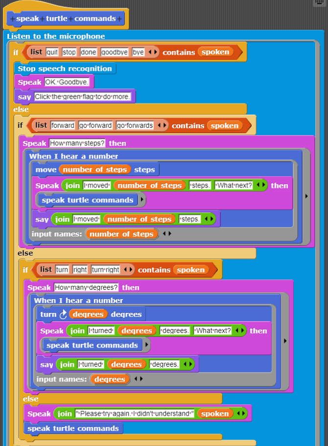
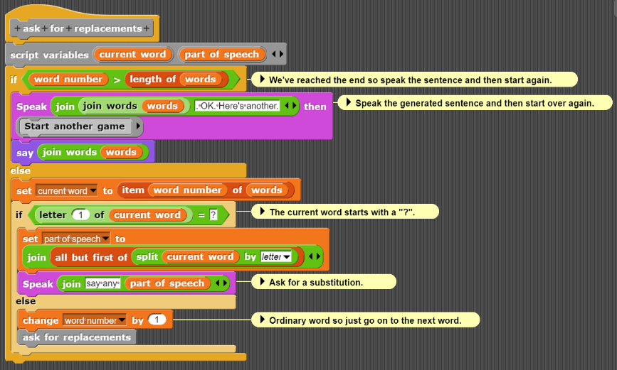
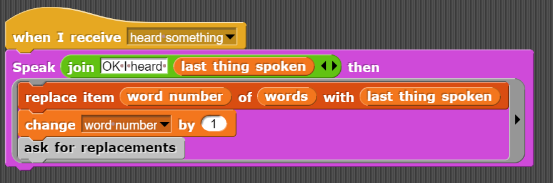
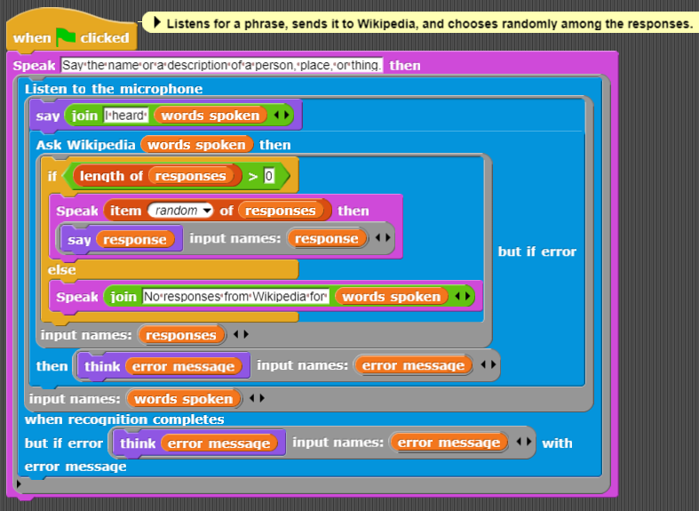

Perlu kita ketahui, lebih mudah bagi komputer untuk memulai pekerjaan dengan teks dan menghasilkan ucapan daripada memulai dengan ucapan dan menghasilkan teks yang sesuai. Karena biasanya, bagi komputer lebih mudah untuk menghasilkan sesuatu (contohnya: menghasilkan/menampilkan teks, gambar dan lainnya) daripada mengenali atau memindai sesuatu.
pUcapan maupun suara lainnya dapat menyebabkan getaran di udara yang menyebabkan getaran di mikrofon komputer. Kemudian getaran ini diubah menjadi angka. Inilah yang kita sebut dengan pengenalan ucapan/suara atau Speech Recognition. Speech Recognition akan mendeteksi suara dari ucapan dan menerjemahkannya dengan angka-angka kemudian mencoba menentukan apa yang dikatakan. Namun perlu kita ketahui proses ini tidak sempurna dan tentunya kesalahan dapat terjadi.
Ayo kita mencoba! Klik pada blok berikut, ucapkan sesuatu, lalu klik pada variabel "last thing heard".Jika semuanya berjalan dengan baik, kalian akan melihat apa yang baru saja diucapkan.
Jika gagal memuat, klik disini!
Cobalah mengucapkan sesuatu, lihat hasilnya, klik blok tersebut lagi, ucapkan hal lain, dan lihat lagi. Jika kalian ingin mencoba bahasa lain, gunakan perintah "set default language". Jika memungkinkan, sistem akan menggunakan bahasa yang diberikan jika tidak ada bahasa atau suara eksplisit yang diberikan untuk perintah mendengarkan yang lebih canggih. Ada banyak cara untuk menentukan bahasa:
Program berikut menggunakan blok "listen then ..." untuk mengontrol sprite. Kalian dapat memerintahkannya untuk maju atau berbelok ke kanan. Kemudian program akan menanyakan seberapa banyak dan melaksanakan perintah tersebut. Katakan "goodbye" untuk keluar dari program. Terkadang kita perlu mengulangi perkataannya. Terkadang program dapat melakukan kesalahan dalam mendengar ucapan
Jika gagal memuat, klik disini!
Ada versi layar penuh dari program ini. Program ini mendukung banyak cara untuk mengatakan kata atau frasa perintah yang sama. Program yang berbeda mengharapkan pengguna untuk mengucapkan kalimat lengkap dan mencari angka serta kata perintah ('maju' dan 'kanan') untuk merespons. Program serupa dapat ditulis untuk mengontrol perangkat fisik seperti robot atau rangkaian lampu.
Latihan: Coba tambahkan perintah "turn left" ke dalam program. Apa lagi yang mungkin menyenangkan untuk dicoba? Petunjuk: bagaimana dengan mengubah ukuran, tampilan, warna, atau lainnya? Bagaimana dengan melakukan animasi sebagai respons terhadap perintah suara?
Jika kalian mengklik kalian akan melihat blok-blok di balik program. Jika Kalian kemudian mengklik kanan pada "speak turtle commands" dan memilih 'edit', Kalian akan melihat program berikut.
Variabel "spoken" berisi apa yang baru saja dikenali. Perintah if-then-else bersarang pertama-tama akan menguji ucapan untuk keluar dari program, kemudian untuk gerakan maju, dan kemudian perintah berbelok. Jika tidak ada yang cocok, maka respons 'tidak dimengerti' dibuat. Baik perintah berbelok maupun bergerak menyebabkan program menanyakan jumlah untuk berbelok atau bergerak. Ketika sebuah angka diucapkan, kura-kura kemudian berbelok atau bergerak menyesuaikan.
Program penghasil kalimat berikut dimulai dengan sebuah "template" kalimat acak. Program menganggap setiap kata yang diawali dengan "?" sebagai variabel yang digantikan dengan bertanya kepada pengguna untuk sesuatu. Contohnya:
The silly ?PLURAL-NOUN like ?ADJECTIVE bananas.
Dari kalimat diatas, program meminta pengguna untuk mengucapkan plural-noun atau kata plural jamak dan kemudian meminta adjective atau kata sifat. Misalkan pengguna menjawab "potatoes" dan "gigantic" , maka program akan mengatakan
The silly potatoes like gigantic bananas.
Jika gagal memuat, klik disini!
Bagian program ini melalui kalimat kata per kata, berhenti ketika sebuah kata atau frasa dimulai dengan "?". Program berhenti setelah meminta penggantian dan kemudian memanggil perintah "Broadcast speech recognition results ...". Kode berikutnya merespons ketika sesuatu telah didengar dan diinterpretasikan:
Program tersebut mengulang apa yang didengar dan menggantikannya ke dalam daftar kata dengan menggantikan kata yang dimulai dengan "?". Contoh ini menggambarkan bagaimana menggunakan sintesis ucapan dan pengenalan untuk membuat aplikasi yang sepenuhnya verbal. Ini juga merupakan contoh program yang melintasi batas disiplin ilmu. Untuk menghasilkan kalimat yang gramatikal benar (meskipun seringkali nonsens atau lucu), diperlukan konsep-konsep tata bahasa seperti kata benda, frasa kata benda, kata kerja, kata sifat, dan kata keterangan. Masalah tentang kesepakatan jumlah dan waktu muncul secara alami. Menurut kalian bisakah program seperti ini bekerja tanpa konsep-konsep tata bahasa seperti kata benda, kata kerja, kata sifat, dll?
Sebuah program tanpa konsep tata bahasa seperti kata benda, kata kerja, atau kata sifat mungkin dapat beroperasi dalam konteks tertentu, terutama jika tujuannya adalah untuk menghasilkan hasil verbal yang tidak bergantung pada struktur gramatikal tradisional. Namun, untuk berinteraksi dengan bahasa manusia secara efektif dan menghasilkan kalimat yang dapat dimengerti dan bermakna secara umum, konsep-konsep tata bahasa sangat penting. Dalam kasus seperti program contoh yang Anda tunjukkan, meskipun hasilnya mungkin terkadang tidak gramatikal secara tradisional, penggunaan kata-kata seperti "plural noun" atau "adjective" membantu dalam memberikan kerangka kerja yang diperlukan untuk mengatur informasi yang diterima dan dihasilkan secara verbal. Konsep-konsep ini membantu dalam membangun kalimat yang lebih terstruktur dan dapat dipahami, meskipun hasil akhirnya mungkin lebih bersifat kreatif atau eksperimental.
Program berikut memperluas kalimat yang lebih rumit dengan menambahkan fitur baru. Jika program menemukan kata yang dimulai dengan "=", itu akan menggantikannya dengan respons terakhir untuk permintaan contoh kata/frasa tersebut.
Jika gagal memuat, klik disini!
Contoh, di bawah ini terdapat cerita pendek yang memakai template kalimat acak
This is a story about ?GIRLS-NAME. =GIRLS-NAME is ?ADJECTIVE and very ?ADJECTIVE. She travelled to ?PLACE-NAME. There she met ?BOYS-NAME who was a ?OCCUPATION in =PLACE-NAME. =GIRLS-NAME and =BOYS-NAME lived ?ADVERB ever after.
Apabila kita merespon dengan "Juliet", "warm", "beautiful", "Verona", "Romeo", "amateur poet", dan "barely" maka ceritanya akan menjadi seperti dibawah ini
This is a story about Juliet. Juliet is warm and very beautiful. She travelled to Verona. There she met Romeo who was a amateur poet in Verona. Juliet and Romeo lived barely ever after.
Demo berikut ini mirip dengan Google Assistant . Demo ini meminta pengguna untuk mengatakan sesuatu dan kemudian mengirimkan kata-kata tersebut ke Wikipedia. Biasanya, ada banyak hasil yang cocok sehingga program memilih salah satunya secara acak dan mengucapkannya.
Jika gagal memuat, klik disini!
Berikut ini adalah demo antarmuka ucapan yang sangat sederhana ke layanan cuaca. Program ini meminta nama kota dan mengucapkan suhu saat ini serta perkiraan cuaca. Program cuaca dapat ditingkatkan dengan berbagai cara. Misalnya, program dapat menanyakan informasi cuaca apa yang diinginkan pengguna.
Jika gagal memuat, klik disini!
Speech Recognition dapat digunakan untuk mentranskrip ucapan yang diucapkan. Mereka yang tidak dapat mengetik atau menulis dapat menggunakannya untuk berkomunikasi secara tekstual dan menghasilkan catatan serta laporan. Ada banyak konteks khusus di mana teknologi ini sangat berguna. Misalnya, dokter dapat menghasilkan transkrip percakapan dengan pasien mereka, yang dapat meningkatkan catatan medis pasien. Transkripsi otomatis memungkinkan pencarian teks dalam video dan pembuatan caption untuk video. Dipadukan dengan terjemahan, Speech Recognition dapat memberikan input ke layanan terjemahan dan hasilnya dapat diubah menjadi ucapan dalam bahasa lain.
Penggunaan lain dari Speech Recognition adalah sebagai antarmuka ke komputer atau artefak digital. Aplikasi atau robot dapat dibuat untuk menerima perintah verbal. Ini sangat memberdayakan bagi orang-orang dengan disabilitas yang tidak dapat melakukan tugas-tugas tersebut sendiri. Asisten seperti Siri dapat memberikan respons yang berguna terhadap pertanyaan yang diucapkan. Input dan output verbal dapat menjadi cara teraman untuk berkomunikasi dalam beberapa situasi seperti saat mengemudi atau memandu pesawat.
Seperti banyak teknologi lainnya, Speech Recognition dapat disalahgunakan. Ini bisa digunakan untuk memata-matai populasi secara luas. Hal ini bisa menjadi bagian dari dasar untuk menggantikan interaksi manusia dengan layanan bantuan pusat panggilan dengan komputer yang tidak memiliki pemahaman dan empati yang bisa diberikan oleh manusia. Dengan mengurangi biaya panggilan telemarketing secara drastis melalui otomatisasi, panggilan tersebut bisa menjadi suatu gangguan. Penggunaan robot pendamping untuk memberikan dukungan sosial kontroversial karena robot tersebut mungkin kurang pemahaman dan empati. Teknologi ucapan telah menjadi bagian dari mainan interaktif dan beberapa berpendapat bahwa anak-anak menjadi terlalu terikat secara emosional pada mereka.
Apakah menurut kalian manfaatnya lebih besar daripada bahayanya? Apakah ada cara untuk menghindari bahaya tersebut?
Dimulai dengan mikrofon yang mengubah getaran di udara (yaitu, suara) menjadi angka (menggunakan sesuatu yang disebut konverter analog-ke-digital). Suara yang didigitalkan dipecah menjadi segmen pendek (seperseratus atau seperseribu detik panjangnya) dan dimasukkan ke dalam mesin pengenalan. Saat ini, yang terbaik mengandalkan jaringan saraf. Program statistik yang kompleks juga sering digunakan.
Ada banyak tantangan termasuk berbagai jenis suara, dialek, dan aksen yang mungkin dihadapi oleh mesin Speech Recognition. Seringkali ada suara latar belakang yang perlu dihilangkan dari sinyal.
Tantangan lainnya berasal dari kompleksitas bahasa manusia. Ada banyak kata yang merupakan homonim, kata-kata berbeda yang terdengar sama. Memisahkan ucapan menjadi kata-kata yang terpisah itu sulit. Contoh klasik adalah bagaimana "recognise speech" terdengar sangat mirip dengan "wreck a nice beach".
Saat menggunakan blok dan program contoh dalam bab ini, kita sering kali akan menemui kesalahan. Ini terkadang menggelikan, terutama ketika menyebabkan program melakukan sesuatu yang konyol. Untuk aplikasi di mana kesalahan komputer dapat menyebabkan masalah serius, antarmuka dapat dibuat sehingga meminta konfirmasi sebelum melanjutkan. Menarik untuk membandingkan kesalahan Speech Recognition dengan jenis dan frekuensi kesalahan yang dilakukan manusia saat mendengarkan ucapan.
Mesin Speech Recognition umumnya dapat melakukan lebih dari blok dasar "listen then ..." yang dijelaskan di atas. Kalian dapat menentukan bahasa yang diharapkan. Mesin dapat melaporkan hasil interim dan hasil alternatif. Ini juga dapat memberikan nilai 'kepercayaan' yang menunjukkan seberapa yakinnya mesin bahwa Speech Recognitiondilakukan dengan benar. Semua fungsionalitas ini disediakan oleh blok ini:
//disini diselipkan snap berjudul “A full-featured block for turning speech into text.”
Argumen untuk blok ini adalah sebagai berikut (semua dapat dikosongkan):
Sebagai contoh, jika Anda mengatakan "red" , Anda akan melihat "red" , tetapi jika segera setelahnya Anda mengatakan "a book", Anda akan melihat "red" menjadi "read a book". Anda dapat melihat fenomena yang sama pada demo Google ini.
Ada banyak yang bisa dieksplorasi dengan opsi 'language' . Misalnya, jika Anda memilih 'fr-FR' (bahasa Prancis seperti yang digunakan di Prancis) dan kemudian mengatakan "une deux trois quatre five six" , hasilnya akan menjadi "1 2 3 4 5 6". Perhatikan bahwa ini mengenali baik bahasa Prancis maupun bahasa Inggris.
Berikut adalah beberapa ide proyek menggunakan Speech Recognition (Speech Syntesis and Recognition):
diatas hanyalah beberapa ide projek yang dapat kalian bangun. Masih ada banyak aplikasi dan proyek lain yang mungkin dengan teknologi Speech Recognition.
Dokumentasi Speech Recognition adalah deskripsi yang sangat lengkap tentang fitur Speech Recognition yang seharusnya didukung oleh browser (Chrome dan Edge saat ini adalah browser tersebut tetapi pengembang browser lainnya juga sedang mengembangkannya).
How Stuff Works memberikan penjelasan yang jelas tentang bagaimana sistem Speech Recognition bekerja dan apa tantangannya.
Wikipedia juga dapat dijadikan sumber karena mencakup topik ini dengan baik
Antarmuka Pemrograman Ramah Anak untuk Layanan AI Cloud adalah makalah yang membahas blok sintesis dan Speech Recognition Snap!
Ayo kita menuju chapter selanjutnya, yaitu Image Recognition